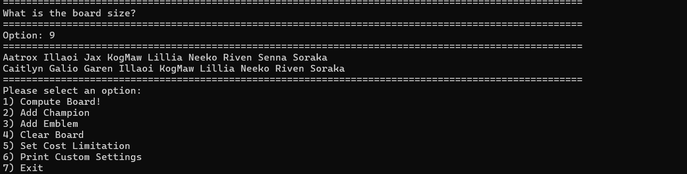
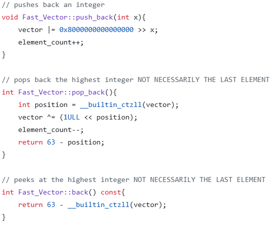
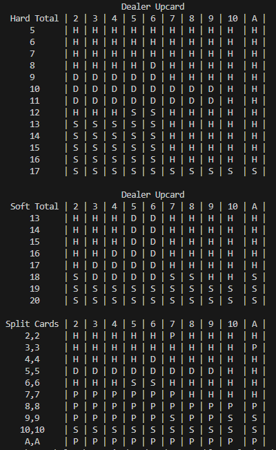

I'm Nikolay Zakirov, a third year computing science student at Simon Fraser University. I have always been more of a self-starter when I find something I am passionate about. I tend to produce my best work on my own where I can dive deep into the details of the project and come up with unique solutions to complex problems. In my third year here at SFU I have undertaken the role as Project Manager for Introduction to Software Engineering (CMPT 295). This position brings many challenges as I must organize myself and three other peers for the on time completion of group projects and assignments while maintaining a high degree of quality.
My first big project started in first year (2022) where I felt confident enough with my programming skills to take on my first project to be developed in C. The original TFT Board Solver parced txt files which contained all the relevant information. This allowed for flexibility as TFT is a game where the dataset is changing every six months. This approach continued all the way through to it's current state however, more fields of data were later implemented. The first versions of the TFT Board solver struggled to solve for boards of size 7 or greater. Reason being for solving an n sized board the number of possible boards is O(n!). using permutations and many optimizations I learned in class I've gotten the TFT Board Solver down to a O(59 choose n) worst case. I've created a recursive prunning algorithm that only computes 'promising' boards and a specialized vector which is four times faster than std::vector! After lots of work on the project the system is now able to determine all of the best boards (based on traits) for a size 9 board in 7 seconds. That's over 12.5 billion unique permutations of boards it searches through!
Here is how I created my own bit-based vector class which is faster than std::vector with several limitations. The vector has no reference to which element was placed in what order. The vector cannot hold duplicates. The vector cannot hold values outside of 0-63. Despite these limitations, there are pleanty of use cases for such a vector and should be implemented if needed, for instance, the TFT_Board_Solver.
In the summer of second year, I became interested in the probability of blackjack hands. Being somewhat similar to my TFT Board Solver project, I decided to program the odds of blackjack. Since this was nothing new, I used and compared well know statistics on the game to help fine-tune and verify my algorithm which also uses recursive prunning. After a couple of months working on and off I've gotten the project to produce calculations faster than Wizzard of Odds which is the official blackjack hand calculator. Unlike every other blackjack hand calculator, I have decided to take on the challenge of computing the expected value of any given Blackjack Shoe. The reason online resources for such a calculation does not really exist is because it can take over an hour with a standard algorithm. I am attempting to wittle the computational time down to under 5 minutes. Currently my algorithm is able to produce results after 20 minutes but still has room for pleanty of optimizations I am working on implementing.
I am un undergraduate at SFU studying Computing Science and working towards a minor in Economics. I have 6 seasons of work experience as a landscaper for Redwoods Landscaping Inc.
Social Media
nikolayzakirov31@gmail.com